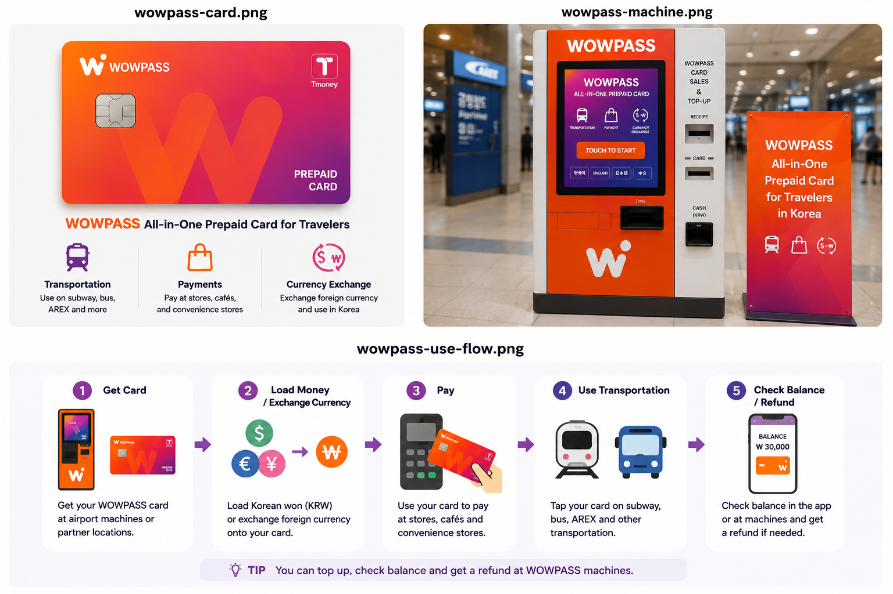
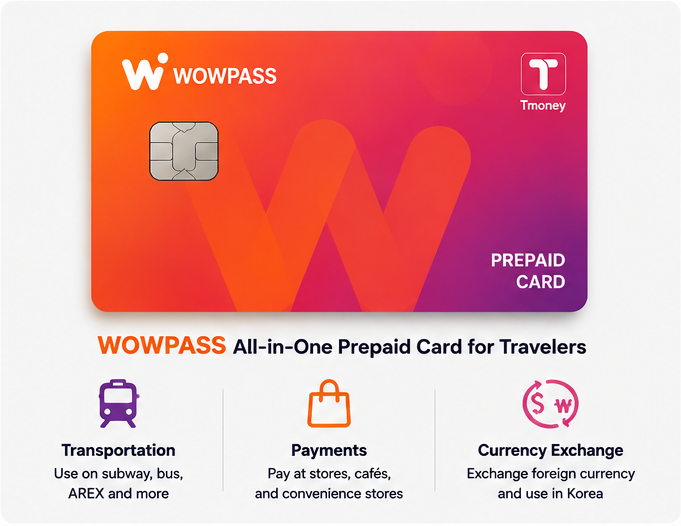
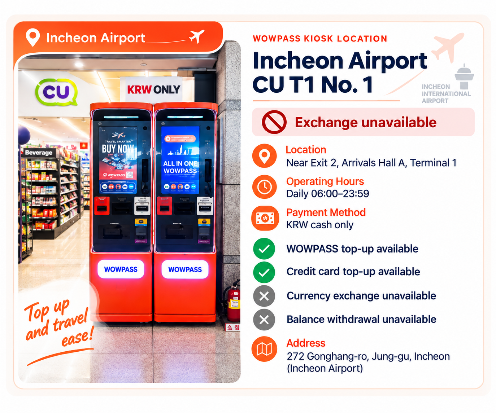
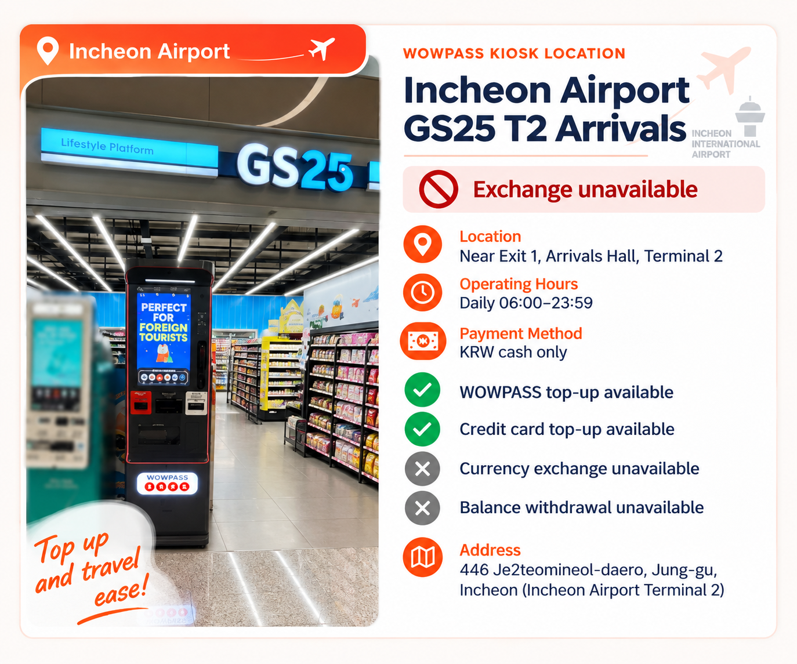
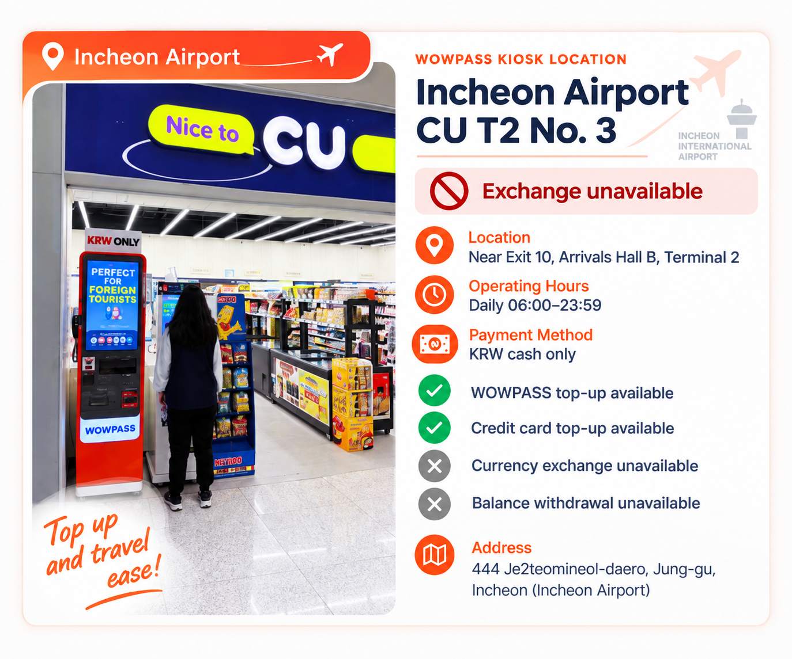
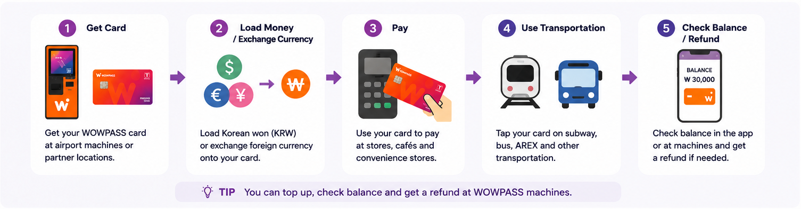

“เติมเงินเข้า WOWPASS แล้ว แต่รถไฟใต้ดินบอกยอดไม่พอ”
สาเหตุที่เป็นไปได้มากที่สุดคือคุณเติม WOWPASS payment balance ไม่ใช่ T-money balance ที่ฝังอยู่ ทั้งสองแยกกัน ดูยอดขนส่งในแอปแล้วเติมฝั่งนั้นถ้าจำเป็น
WOWPASS มีประโยชน์ถ้าคุณต้องการบัตรเติมเงินสำหรับจ่ายในเกาหลี การแลกเงิน และ T-money อยู่บนบัตรจริงใบเดียว แต่คำว่า “all-in-one” ทำให้เข้าใจผิดได้ง่าย เพราะเงินที่ใช้จ่ายในร้านกับเงินที่ใช้ขึ้นรถบัสและรถไฟใต้ดินเป็นคนละยอด
ถ้าต้องการแค่ขนส่งสาธารณะ บัตร T-money ปกติมักง่ายกว่า WOWPASS เริ่มมีเหตุผลมากขึ้นเมื่อคุณต้องการยอดเงินแบบบัตรเติมเงินเกาหลี การเติมด้วยเงินตราต่างประเทศที่รองรับ การถอนเงินสด หรือฟังก์ชันจัดการบัตรในแอปด้วย

WOWPASS รวมหลายอย่างที่นักท่องเที่ยวต่างชาติมักต้องจัดการแยกกันในเกาหลี
ยอด WOWPASS ใช้เป็นยอดบัตรเติมเงินสำหรับซื้อของทั่วไป ตัวบัตรยังมีฟังก์ชัน T-money สำหรับรถบัสและรถไฟใต้ดิน เงินสดต่างประเทศที่รองรับสามารถแลกและเติมผ่านเครื่อง WOWPASS ส่วนแอปรองรับวิธีเติมเงินเพิ่มเติมและฟังก์ชันจัดการบัตร
การรวมหลายอย่างไว้ด้วยกันคือจุดเด่น แต่ก็เป็นจุดที่ความสับสนส่วนใหญ่เริ่มขึ้น
ฝั่งการชำระเงินกับฝั่งขนส่งอยู่บนบัตรใบเดียวกัน แต่ไม่ได้ใช้ยอดเดียวกัน การเติม ₩50,000 เข้า WOWPASS balance ไม่ได้แปลว่ามีเครดิตรถไฟใต้ดิน ₩50,000 ฝั่ง T-money ต้องเติมแยก
สำหรับคนที่เข้าใจความต่างนี้ WOWPASS ใช้งานไม่ยาก แต่ถ้าคาดหวังว่ายอดเดียวจะจ่ายได้ทุกอย่าง ประตูรถไฟใต้ดินครั้งแรกอาจทำให้สับสน
นี่คือจุดที่ควรเข้าใจก่อนเติมเงินเข้าบัตร


| รายการ | WOWPASS balance | T-money balance |
|---|---|---|
| การใช้งานหลัก | ร้านค้า ร้านอาหาร และการจ่ายบัตรออฟไลน์ทั่วไป | รถบัส รถไฟใต้ดิน และขนส่งที่รองรับ |
| วิธีจ่าย | เสียบ IC chip ของบัตรเข้าเครื่องชำระเงิน | แตะบัตรที่เครื่องอ่านขนส่ง |
| วิธีเติม | เครื่อง WOWPASS หรือวิธีเติมผ่านมือถือที่รองรับ | เติม T-money แยกต่างหาก |
| เติมอีกยอดแล้วเงินจะเข้าฝั่งนี้ไหม? | ไม่ | ไม่ |
| แอปรองรับอะไร | เช็กยอด ธุรกรรม และจัดการบัตร | เช็กยอดและใช้วิธีเติมในแอปที่รองรับปัจจุบัน |
คู่มือ WOWPASS เองแยกยอดสองฝั่งนี้ชัดเจน การซื้อของทั่วไปใช้ WOWPASS prepaid balance ส่วนการเดินทางใช้ T-money balance ที่ฝังอยู่ในบัตร
ผลในทางปฏิบัติง่ายมาก: ร้านจ่ายผ่านสำเร็จไม่ได้บอกว่าเงินรถไฟใต้ดินเหลือเท่าไร และยอด T-money ที่เพียงพอก็ไม่ได้บอกว่ายอด WOWPASS สำหรับซื้อของเหลือเท่าไร
ถ้าประตูรถไฟใต้ดินแจ้งว่ายอดขนส่งไม่พอ การเติมเงินเฉพาะ WOWPASS payment balance จะไม่แก้ปัญหา
ที่สนามบินอินชอน สิ่งสำคัญคือไปตามจุดที่ระบุไว้ในการจองจริง จุดร้านสะดวกซื้อบางแห่งในสนามบินมีเครื่อง self-service ของ WOWPASS ดังนั้นคำว่า “รับที่สนามบิน” ไม่ได้หมายความว่าจะมีพนักงานยื่นบัตรให้ที่เคาน์เตอร์เสมอไป
ณ วันที่ 5 ตุลาคม 2026 หน้าจองทางการของ WOWPASS แสดง Airport CU Convenience Stores สำหรับ Incheon Airport Terminal 1 และ Terminal 2 ส่วนตัวค้นหาเครื่องทางการก็แสดงเครื่อง WOWPASS ที่จุดร้านสะดวกซื้อในสนามบิน รวมถึง CU และ GS25 ฟังก์ชันของเครื่องต่างกันตามจุด โดย 3 จุดด้านล่างเติม WOWPASS ได้ แต่ไม่รองรับการแลกเงินตราต่างประเทศหรือถอนยอดเงิน
ในขั้นตอนจองยังแยกตัวเลือก Airport SKT Roaming Center สำหรับ WOWPASS + Tmoney + SIM Package และ Machine (Pre-booked) ที่สถานีรถไฟใต้ดิน โรงแรม ร้านสะดวกซื้อ และจุดอื่นไว้ต่างหาก ปัจจุบันหน้าทางการแสดงราคาบัตรปกติ ₩6,000 และราคา ₩5,500 สำหรับตัวเลือกจองเฉพาะบัตรแบบมีส่วนลดที่ระบุ ราคา โปรโมชัน วิธีรับบัตร และฟังก์ชันของเครื่องอาจเปลี่ยนได้ จึงควรเช็กรายละเอียดการจองปัจจุบันและตัวค้นหาเครื่องทางการก่อนเดินทาง
หลังได้รับบัตร ให้ลงทะเบียนในแอป WOWPASS ก่อนเติมเงินจำนวนมาก เช็กก่อนว่ากำลังเติมยอดไหน แล้วค่อยเติมเท่าที่คาดว่าจะใช้ การลงทะเบียนในแอปยังสำคัญหากบัตรหายในภายหลัง



มี 2 เรื่องที่มักถูกปนกัน: การแลกเงินสดต่างประเทศที่เครื่อง WOWPASS กับการเติมเงินผ่านแอป
WOWPASS ปัจจุบันโฆษณาว่ารองรับการเติมด้วยเงินสด 16 สกุล ส่วน mobile top-up ระบุการรองรับบัตรและ e-wallet ต่างประเทศ รวมถึง Mastercard, JCB และ Visa ผ่าน PayPal บนเว็บไซต์ทางการปัจจุบัน
เมื่อใช้เงินสดต่างประเทศที่รองรับกับเครื่อง WOWPASS ระบบจะแปลงเป็นวอนเกาหลีและเพิ่มมูลค่าเข้า WOWPASS payment balance
Mobile top-up เป็นอีกเส้นทางหนึ่ง คุณไม่ได้ใส่ธนบัตรต่างประเทศลงเครื่อง แต่เติมมูลค่าผ่านวิธีชำระเงินต่างประเทศที่รองรับในแอป
ความต่างนี้สำคัญเวลาคิดต้นทุน อัตราแลกเปลี่ยนกับค่าธรรมเนียม top-up ไม่จำเป็นต้องเป็นเรื่องเดียวกัน ก่อนเติมจำนวนมาก ให้ดูจำนวน KRW ที่จะได้รับจริงและค่าธรรมเนียมที่แสดงสำหรับวิธีนั้น แทนการคิดว่าทุกวิธีมีต้นทุนเท่ากัน
ข้อจำกัดการเติมเงินผ่าน PayPal: ตามเงื่อนไขปัจจุบันของ Orange Square ยอดเงินสำหรับชำระเงินของ WOWPASS ที่เติมผ่าน PayPal ไม่สามารถถอนเป็นเงินสดที่เครื่อง WOWPASS โอนไปยังผู้ใช้ WOWPASS คนอื่น หรือขอคืนเงินหรือยกเลิกการเติมเงินหลังทำรายการแล้วได้ หากอาจต้องการถอนเงินส่วนที่ใช้ไม่หมด ควรตรวจสอบข้อจำกัดของวิธีเติมเงินก่อนเติมเงินจำนวนมาก

สำหรับการซื้อของทั่วไป WOWPASS ทำงานคล้ายบัตรเติมเงินเกาหลีมากกว่าบัตรขนส่ง
คู่มือทางการระบุว่ายอด WOWPASS ใช้ได้กับร้านค้าออฟไลน์ในเกาหลีที่รับบัตรเครดิตหรือเดบิตในประเทศ รวมถึงบางแห่งที่บัตรต่างประเทศอาจใช้ไม่ได้ สำหรับการซื้อแบบนี้ คำแนะนำทางการคือเสียบ IC chip ของบัตรเข้ากับเครื่องอ่าน
นี่ต่างจากการขึ้นรถไฟใต้ดิน
ที่ร้าน ร้านอาหาร หรือคาเฟ่ คุณใช้ยอด WOWPASS แต่บนรถบัสหรือรถไฟใต้ดิน คุณแตะบัตรและใช้ยอด T-money แยกต่างหาก
เรื่องนี้ควรจำเวลาใช้ kiosk สั่งอาหารด้วย การเห็นสัญลักษณ์ contactless ไม่ได้หมายความว่าธุรกรรม WOWPASS ทุกแบบควรใช้การแตะเหมือน T-money
การตลาดของ WOWPASS บางครั้งใช้ข้อความที่กว้างมากเกี่ยวกับการรับบัตร สำหรับการวางแผนทริป กฎที่ปลอดภัยกว่าคือมอง WOWPASS เป็นบัตรเติมเงินเกาหลีสำหรับการจ่ายออฟไลน์ ไม่ใช่การรับประกันว่า checkout ออนไลน์ทุกแบบ เว็บไซต์ต่างประเทศ หรือ terminal พิเศษทุกเครื่องจะรับ
ถ้าการจ่ายที่ร้านล้มเหลว ให้มีวิธีจ่ายอื่นพร้อม แทนการย้ายเงินระหว่างยอดไปมาโดยไม่รู้ปัญหา
WOWPASS ยังสามารถเปลี่ยนยอดบางส่วนกลับเป็นเงินสดวอนเกาหลีผ่านเครื่อง WOWPASS ที่รองรับ
เว็บไซต์ทางการปัจจุบันระบุวงเงินถอนสูงสุด ₩100,000 ต่อครั้ง และค่าธรรมเนียม ₩1,000 ต่อการถอน พร้อมระบุว่าสามารถถอนซ้ำได้ เงื่อนไขเหล่านี้อาจเปลี่ยน จึงควรตรวจอีกครั้งก่อนพึ่งพาสำหรับทริปในอนาคต
ข้อยกเว้นสำคัญ: การถอนเงินสดที่เครื่อง WOWPASS ใช้ไม่ได้กับยอดที่เติมผ่าน PayPal โดยเงื่อนไขการเติมเงินปัจจุบันของ Orange Square ระบุชัดเจนว่าห้ามถอนยอดดังกล่าวเป็นเงินสดที่เครื่อง WOWPASS
จุดสำคัญคือ นี่เป็นการถอน WOWPASS balance ผ่านระบบ WOWPASS ไม่ใช่การมีบัญชีธนาคารเกาหลีที่ใช้ ATM ในประเทศได้แบบไม่จำกัด
สำหรับนักท่องเที่ยวที่ต้องการเงินสดเกาหลีเป็นครั้งคราว ฟังก์ชันนี้มีประโยชน์ แต่ไม่ควรมอง WOWPASS เป็นตัวแทนทุกความต้องการด้านธนาคารหรือ ATM ในทริประยะยาว
ฟังก์ชันขนส่งใน WOWPASS คือ T-money จริง
คู่มือ WOWPASS ระบุว่ายอด T-money ใช้กับรถไฟใต้ดินและรถบัสในเกาหลี และให้แตะบัตรที่เครื่องอ่านขนส่ง บริษัทปัจจุบันยังโปรโมตการใช้ด้านขนส่งนอกเหนือจากรถไฟและรถบัส รวมถึงแท็กซี่ที่รองรับ
คำสำคัญคือ “ยอดเงิน”
มี WOWPASS อยู่ในกระเป๋าไม่ได้แปลว่าฝั่งขนส่งมีเงิน T-money balance ต้องมีมูลค่าของตัวเองเพียงพอ
แอปปัจจุบันสามารถแสดงยอดบัตรขนส่งและรองรับการเติมเมื่อยอดต่ำ
สำหรับคนที่ใช้รถไฟและรถบัสทุกวัน สิ่งนี้สะดวกเพราะโดยปกติไม่ต้องมีบัตร T-money จริงอีกใบ แต่ประโยชน์คือความสะดวก ไม่ใช่การทำให้ระบบยอดเงินหายไป คุณยังต้องจำว่าเงินก้อนไหนจ่ายอะไร
ในทางปฏิบัติ แอปมีประโยชน์มากกว่าที่เห็นตอนแรก
แอปแสดง WOWPASS payment balance และประวัติธุรกรรมได้ และบริษัทปัจจุบันมีการแจ้งเตือนการจ่ายแบบ real-time ผ่านแอป นอกจากนี้ยังดูยอดบัตรขนส่งที่ฝังอยู่และเติมเงินได้
ฟังก์ชันที่สำคัญที่สุดอาจไม่หวือหวา: ความปลอดภัยของบัตร
WOWPASS ระบุว่าหากบัตรหายหรือถูกขโมย สามารถ pause บัตรในแอปเพื่อปกป้อง WOWPASS balance แล้วออกบัตรทดแทนได้
นี่เป็นเหตุผลที่ดีให้ลงทะเบียนบัตรจริงในแอปหลังได้รับไม่นาน แทนการรอจนมีปัญหา
ปัจจุบันแอปยังรองรับการโอนยอดระหว่างผู้ใช้ WOWPASS ซึ่งอาจสะดวกสำหรับเพื่อนที่เดินทางด้วยกัน แต่เป็นฟังก์ชันรองเมื่อเทียบกับการดูการใช้จ่าย จัดการบัตร และปกป้องยอด
บัตรเดินทางหายน่ารำคาญ แต่บัตรเดินทางที่มียอดเติมเงินจำนวนมากหายเป็นเรื่องใหญ่กว่า
ถ้า WOWPASS หาย การกระทำแรกที่มีประโยชน์คือเปิดแอปแล้ว pause บัตร WOWPASS ปัจจุบันระบุว่าสิ่งนี้ช่วยปกป้อง WOWPASS balance ที่เหลือ และสามารถออกบัตรทดแทนได้
เมื่อบัตรสูญหาย ยอดเงินทั้งสองส่วนจะได้รับการจัดการต่างกัน หลังออกบัตรใหม่ คุณสามารถใช้ยอดเงินสำหรับชำระเงินของ WOWPASS ที่เหลือได้อีกครั้ง แต่ยอด T-money ในบัตรที่หายจะกู้คืนไม่ได้ WOWPASS ระบุค่าธรรมเนียมออกบัตรใหม่ในปัจจุบันที่ ₩3,000
นี่เป็นอีกเหตุผลที่ไม่ควรเติมเงินมากเกินกว่าที่คาดว่าจะใช้
WOWPASS อาจจบทริปด้วยเงินเหลืออยู่ 2 ที่: WOWPASS payment balance และ T-money transportation balance
สองยอดนี้ไม่ควรถูกมองว่าเป็น refund เดียว
คู่มือใช้งาน WOWPASS แยกฟังก์ชันถอน WOWPASS balance กับ refund T-money ซึ่งสะท้อนโครงสร้างสองยอดเดียวกันกับตอนใช้งาน
ก่อนเดินทางไปสนามบินครั้งสุดท้าย ให้ดูทั้งสองยอดแยกกัน
ถ้ายังต้องใช้รถไฟใต้ดินหรือขนส่งไปสนามบิน ให้เหลือยอดฝั่ง T-money สำหรับทริปนั้น ถ้า WOWPASS payment balance เหลือมากเกินไป ให้ดูขั้นตอนถอนปัจจุบันก่อนถึงสนามบิน
อย่าปล่อยเรื่องนี้ไว้ไม่กี่นาทีก่อนออกเดินทาง จุด refund หรือถอนเงินอาจไม่ได้อยู่ตรงที่คาด
สาเหตุที่เป็นไปได้มากที่สุดคือคุณเติม WOWPASS payment balance ไม่ใช่ T-money balance ที่ฝังอยู่ ทั้งสองแยกกัน ดูยอดขนส่งในแอปแล้วเติมฝั่งนั้นถ้าจำเป็น
อย่าคิดว่าจะมีพนักงานยื่นบัตรให้ที่เคาน์เตอร์เสมอไป จุดร้านสะดวกซื้อบางแห่งในสนามบินอินชอนมีเครื่อง self-service ของ WOWPASS ให้ทำตามคำแนะนำที่ผูกกับการจองของคุณ และเช็กตำแหน่งล่าสุดจากตัวค้นหาเครื่องทางการ เพราะรูปแบบการติดตั้งและฟังก์ชันที่ใช้ได้อาจต่างกันตามจุด
ทั้งคู่เพิ่มมูลค่าที่ใช้ได้ แต่เส้นทางการเติมต่างกัน เงินสดต่างประเทศที่รองรับผ่านกระบวนการแลกเงินที่เครื่อง ส่วนบัตรต่างประเทศหรือ e-wallet ที่รองรับใช้ผ่าน mobile top-up ปัจจุบัน
รถไฟใต้ดินใช้ฟังก์ชัน T-money ส่วนร้านใช้ WOWPASS prepaid function เช็กยอดที่ถูกต้องก่อน ถ้ายอดเพียงพอแต่ร้านยังทำรายการไม่ได้ ให้ใช้วิธีจ่ายอื่น แทนการคิดว่าธุรกรรมขนส่งที่สำเร็จพิสูจน์ว่าการจ่ายร้านทุกแห่งต้องสำเร็จ
สำหรับการซื้อ WOWPASS ทั่วไป คำแนะนำทางการคือเสียบ IC chip เข้าเครื่องอ่าน การแตะคือพฤติกรรมฝั่งขนส่ง
ระงับการใช้งานบัตรชั่วคราวผ่านแอป WOWPASS ให้เร็วที่สุด หลังออกบัตรใหม่ คุณจะใช้ยอดเงินสำหรับชำระเงินของ WOWPASS ที่เหลือได้อีกครั้ง แต่กู้คืนยอด T-money ในบัตรที่หายไม่ได้ WOWPASS ระบุค่าธรรมเนียมออกบัตรใหม่ในปัจจุบันที่ ₩3,000 หากระงับบัตรผ่านแอปไม่ได้ ให้ติดต่อฝ่ายช่วยเหลือของ WOWPASS
จัดการแยกกัน ฝั่ง WOWPASS payment มีขั้นตอนถอนของตัวเอง ส่วน T-money มีขั้นตอน refund ของตัวเอง เช็กทั้งสองก่อนทริปไปสนามบินครั้งสุดท้าย
WOWPASS มีประโยชน์ที่สุดเมื่อหลายปัญหาเกิดพร้อมกัน
นักท่องเที่ยวที่คาดว่าจะใช้ขนส่งสาธารณะ ต้องการบัตรเติมเงินเกาหลีสำหรับซื้อของประจำวัน และอยากมีวิธีเปลี่ยนเงินสดต่างประเทศที่รองรับหรือเติมผ่านแอป อาจได้ประโยชน์จริงจากบัตรจริงใบเดียวแทนการแยกแต่ละระบบ
ยังเหมาะกับคนที่อยากกำหนดงบทริปไว้บนยอดเติมเงินแยกจากบัตรเครดิตต่างประเทศหลักสำหรับการซื้อเล็กๆ ทุกครั้ง
เหตุผลจะอ่อนลงมากถ้าบัตรต่างประเทศของคุณทำงานในเกาหลีได้ดีอยู่แล้วและต้องการเพียงบัตรขนส่ง ในกรณีนั้น WOWPASS เพิ่มแอป ยอดเงิน และอีกระบบบัตรที่ต้องทำความเข้าใจ
คนมาโซล 3 วันที่ต้องการแค่รถไฟใต้ดินไม่ได้ได้ประโยชน์จากฟังก์ชันเพิ่มโดยอัตโนมัติ
บัตร T-money ปกติทำงานสำคัญหนึ่งอย่างโดยแทบไม่ต้องตั้งค่า: ขนส่ง
WOWPASS ใส่ T-money ไว้ในผลิตภัณฑ์ชำระเงินที่กว้างกว่า ช่วยลดการพกบัตรจ่ายเงินและบัตรขนส่งแยกกันได้ แต่ความสะดวกมีค่าที่สุดเมื่อคุณตั้งใจใช้ฟังก์ชันจ่ายเงิน แลกเงิน ถอนเงิน หรือจัดการผ่านแอปด้วย
ถ้าการตัดสินใจยังอยู่ระหว่างสองบัตรนี้ ให้อ่านคู่มือ T-money vs WOWPASS แบบเต็ม แทนการทำซ้ำการเปรียบเทียบทั้งหมดในหน้านี้
สำหรับคนที่รู้แล้วว่าต้องการแค่ขนส่งสาธารณะ: คู่มือ T-money
ไม่เหมือน WOWPASS เป็นบัตรเติมเงินสำหรับนักท่องเที่ยวต่างชาติที่มีฟังก์ชัน T-money สำหรับขนส่งอยู่ด้วย WOWPASS payment balance และ T-money balance แยกกัน
ได้ ฟังก์ชัน T-money ที่ฝังอยู่ใช้กับขนส่งสาธารณะในเกาหลี แต่ T-money balance ต้องเติมแยกจาก WOWPASS payment balance
โดยปกติไม่จำเป็นสำหรับรถบัสและรถไฟใต้ดินทั่วไป WOWPASS มีฟังก์ชัน T-money อยู่แล้ว บัตร T-money แยกอาจยังง่ายกว่าถ้าขนส่งเป็นฟังก์ชันเดียวที่คุณต้องการ
ไม่โดยอัตโนมัติ WOWPASS payment balance กับ T-money balance แยกกัน เช็กยอดขนส่งก่อนพึ่งบัตรสำหรับการเดินทาง
คู่มือทางการระบุว่ายอด WOWPASS ใช้ได้กับร้านค้าออฟไลน์ในเกาหลีที่รับบัตรเครดิตหรือเดบิตในประเทศ การจ่ายทั่วไปใช้การเสียบ IC chip
อย่าคิดว่าการจ่าย WOWPASS ออฟไลน์ได้หมายความว่า checkout ออนไลน์เกาหลีจะรับด้วย คู่มือทางการชัดเจนเรื่องการจ่ายร้านค้าออฟไลน์ สำหรับปัญหาการจ่ายออนไลน์เกาหลี ให้ดูคู่มือ Online Payments แยก
WOWPASS ปัจจุบันรองรับ cash top-up 16 สกุลผ่านบริการของตน ภายใต้กฎเครื่องและสกุลเงินปัจจุบัน เช็กจำนวนแลกที่แสดงก่อนยืนยัน
WOWPASS ปัจจุบันโฆษณา mobile top-up ด้วยบัตรและ e-wallet ต่างประเทศ โดยเว็บไซต์ทางการแสดง Mastercard, JCB และ Visa ผ่าน PayPal ควรเช็กความพร้อมใช้และค่าธรรมเนียมปัจจุบันในแอปก่อนเติมจำนวนมาก ตามเงื่อนไขปัจจุบันของ Orange Square ยอดที่เติมผ่าน PayPal ไม่สามารถถอนเป็นเงินสดที่เครื่อง WOWPASS โอนไปให้ผู้ใช้ WOWPASS รายอื่น หรือขอคืนเงินหรือยกเลิกหลังเติมเงินได้
ได้ หน้าจองทางการปัจจุบันแสดง Airport CU Convenience Stores สำหรับ Terminal 1 และ Terminal 2 และตัวค้นหาเครื่องทางการแสดงเครื่อง WOWPASS ที่จุดร้านสะดวกซื้อในสนามบิน เช่น CU และ GS25 นอกจากนี้ยังมีตัวเลือก Airport SKT Roaming Center สำหรับ WOWPASS + Tmoney + SIM Package แยกต่างหาก ให้เช็กการจองและตัวค้นหาเครื่องปัจจุบันเพื่อยืนยันตำแหน่ง วิธีรับ และฟังก์ชันที่ใช้ได้
ณ การตรวจวันที่ 5 ตุลาคม 2026 หน้าจองทางการแสดง ₩6,000 เป็นราคาบัตรปกติ และ ₩5,500 สำหรับตัวเลือกจองเฉพาะบัตรแบบมีส่วนลดที่ระบุ ราคาและโปรโมชันอาจเปลี่ยน
ได้ เว็บไซต์ทางการปัจจุบันระบุว่าเครื่อง WOWPASS ถอน KRW จากยอดบัตรได้สูงสุด ₩100,000 ต่อครั้ง โดยมีค่าธรรมเนียม ₩1,000 ต่อครั้ง ควรเช็กกฎปัจจุบันก่อนเดินทางเพราะเงื่อนไขอาจเปลี่ยน ข้อยกเว้นสำคัญ: ยอดที่เติมผ่าน PayPal ไม่สามารถถอนเป็นเงินสดที่เครื่อง WOWPASS ได้
ถ้าลงทะเบียนบัตรในแอป WOWPASS ปัจจุบันให้ pause บัตรเพื่อปกป้อง WOWPASS balance และมีขั้นตอนออกบัตรทดแทน หลังออกบัตรใหม่ คุณยังใช้ยอดเงินสำหรับชำระเงินของ WOWPASS ที่เหลือได้ แต่ยอด T-money ในบัตรที่หายกู้คืนไม่ได้ ค่าธรรมเนียมออกบัตรใหม่ที่ระบุในปัจจุบันคือ ₩3,000
อาจคุ้ม แต่ความยาวทริปสำคัญน้อยกว่าวิธีที่คุณตั้งใจจ่ายเงิน ถ้าต้องการฟังก์ชันจ่ายเงิน ขนส่ง และแลกเงินรวมกัน WOWPASS อาจมีประโยชน์แม้ทริปสั้น ถ้าต้องการแค่รถบัสและรถไฟใต้ดิน T-money ปกติง่ายกว่า
ตรวจสอบล่าสุด: 5 ตุลาคม 2026
อัตรา ค่าธรรมเนียม จุดรับ วิธีเติมที่รองรับ และกฎบริการอาจเปลี่ยนได้ สำหรับเรื่องเงินหรือเครื่องเฉพาะจุด ให้ใช้แอป WOWPASS หรือเว็บไซต์ทางการปัจจุบันเป็นหลักเหนือภาพหน้าจอหรือโพสต์ท่องเที่ยวเก่า